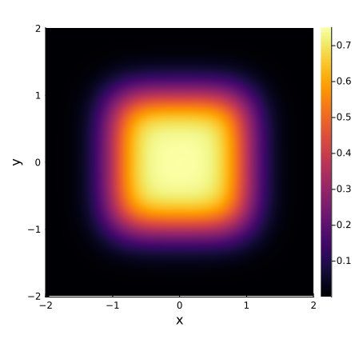

1. Convolutions in 2D dimensions
The KernelConvolution type allows us to rapidly convolve 2-dimensional functions with a kernel function.
For example, we can convolve the 2-dimensional box function $f(x, y)$ with a Gaussian kernel using the following code.
using Plots
using uESTplanar
# 1. Define convolution kernel
σ = 0.3
kconv = KernelConvolution(
range(-2, 2; step=0.005),
range(-2, 2; step=0.005),
(x, y)-> exp(-(x^2 + y^2) / (2σ^2)) / (sqrt(2π) * σ)
)
# 2. Define box function & compute over grid
f = (x, y) -> -1 < x < 1 && -1 < y < 1 ? 1.0 : 0.0
(; xs, ys) = kconv
boundary_values = f.(xs, ys')
# 3. Apply kernel transform
result = kconv(boundary_values)
# 4. Plot potential
heatmap(
xs, ys, transpose(result);
xlabel="x",
ylabel="y",
size=(450, 450),
aspect_ratio=:equal,
dpi=100
)